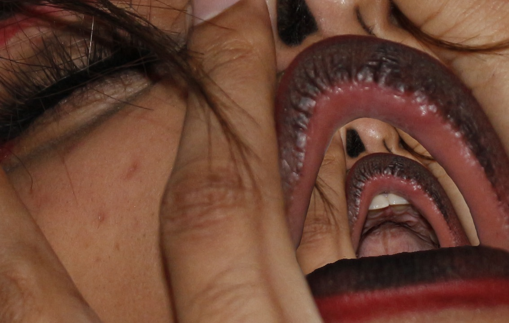

Through Chi Chi ੈ✩‧₊˚
Through Chi Chi is a bold creative expression blending street style, soul, and raw emotion. The project tells stories through powerful visuals and authentic energy that leaves a lasting impression.



Through Chi Chi is a bold creative expression blending street style, soul, and raw emotion. The project tells stories through powerful visuals and authentic energy that leaves a lasting impression.